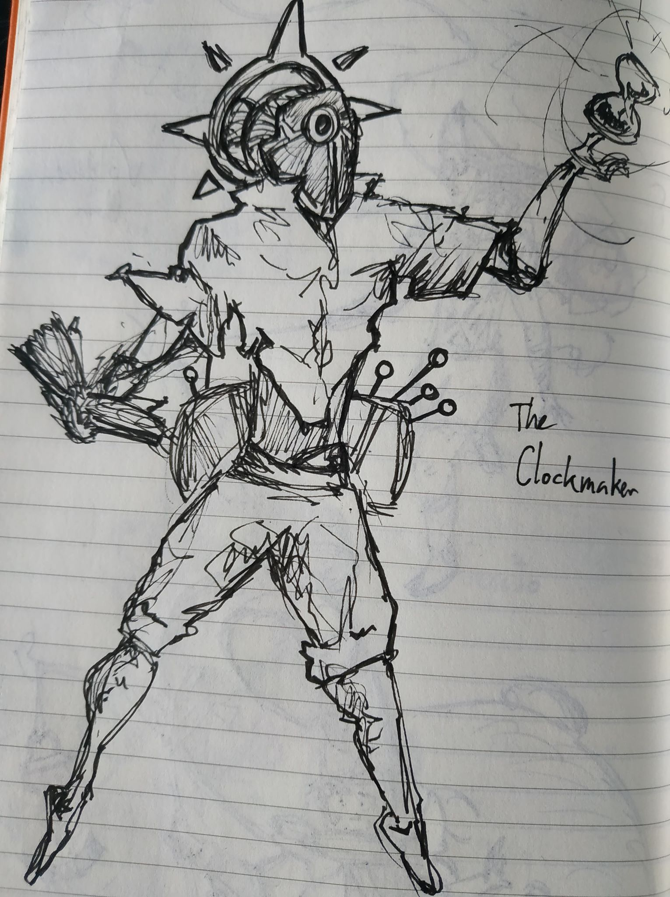
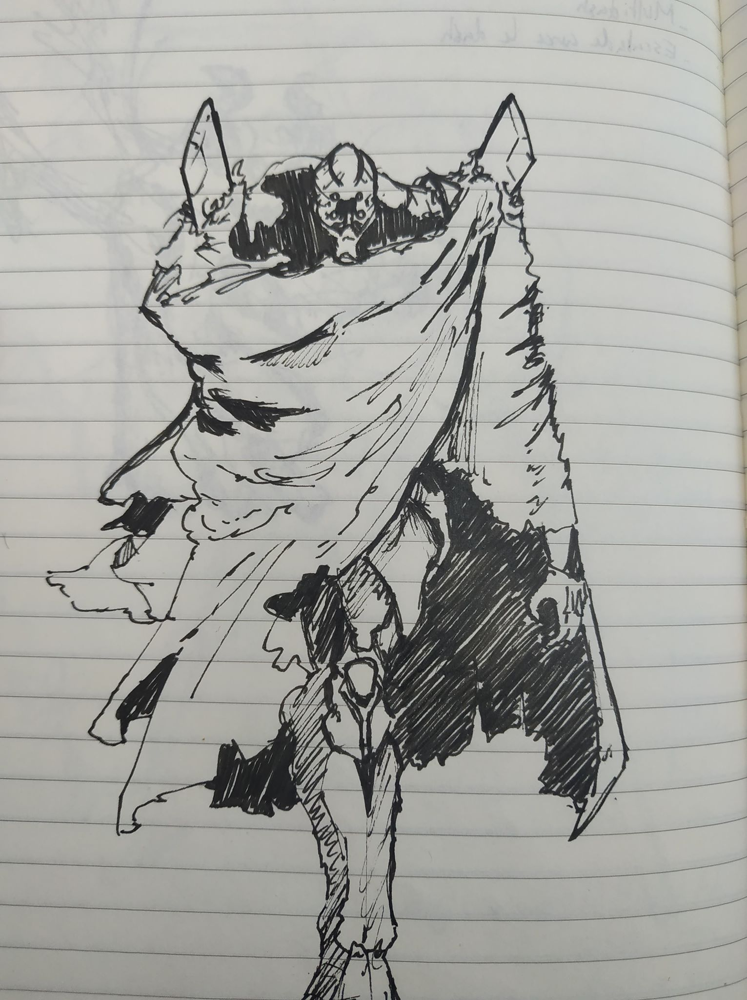
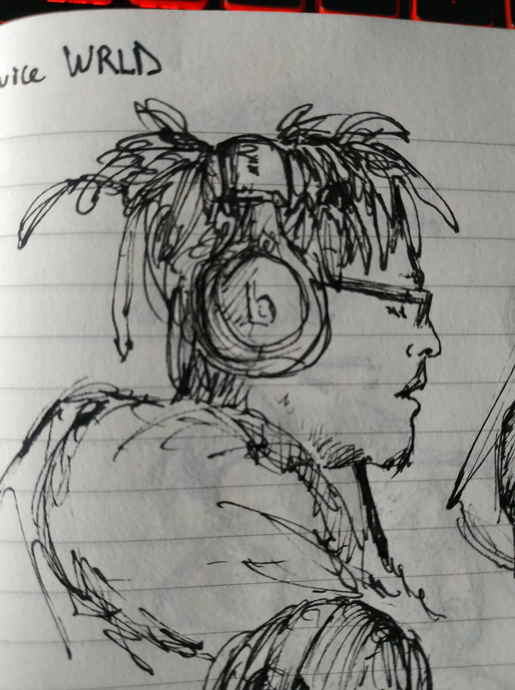
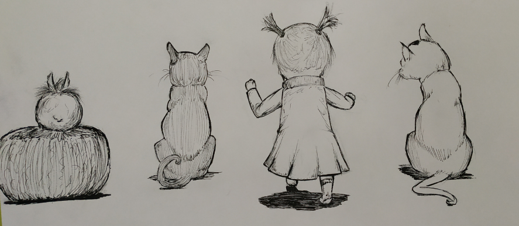
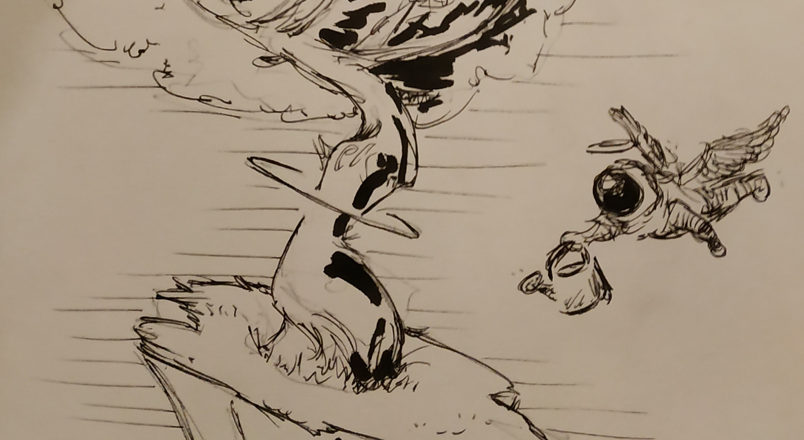

Projets annexes
Le dessin
Je dessine depuis tout petit, et je dessine encore régulièrement, malgré le fait que j'occupe rarement des rôles de graphiste sur les projets de groupe auxquels je participe, en raison d'une préférence pour le dessin traditionnel plutôt que digital. Les mediums que j'utilise le plus sont le marqueur noir/Posca ou le micron, et je reste majoritairement dans le noir et blanc.




